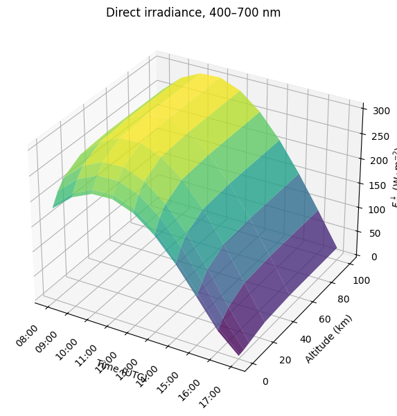
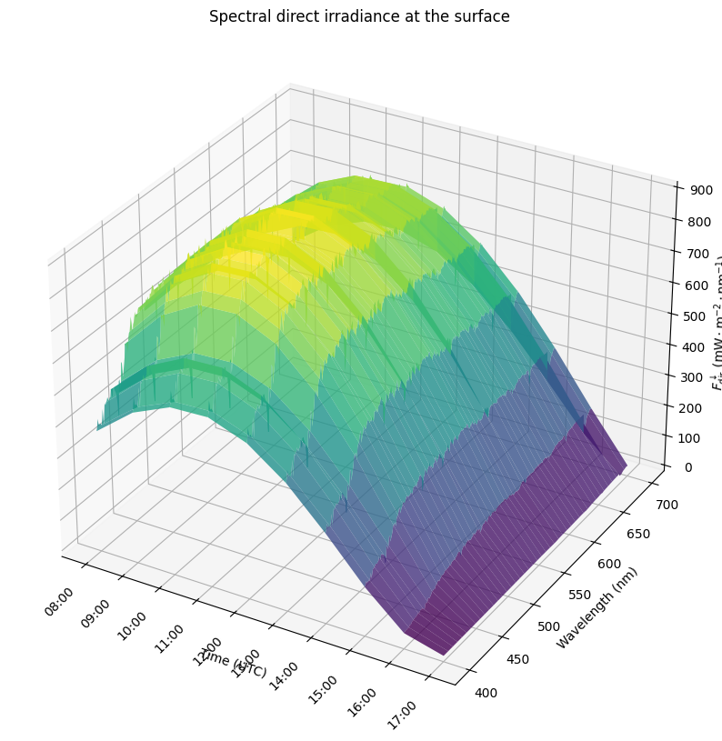
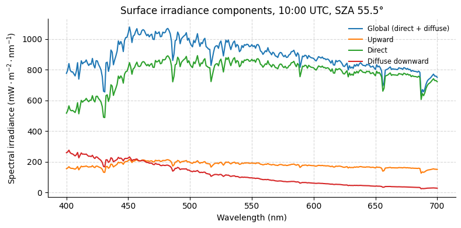

Solar spectra#
Wavelength-resolved solar irradiance (400–700 nm) for ten hourly time steps at 61° N, 22° E on 4 April and seven output altitudes from the surface to 100 km. Spectral solar output is in mW m⁻² nm⁻¹ (units).
import pyradtran # Registers the .pyradtran xarray accessor
from pyradtran import load_config
import matplotlib.pyplot as plt
import numpy as np
import xarray as xr
from pathlib import Path
import pandas as pd
from matplotlib import cm
import logging
# Show warnings only (set to DEBUG to see every uvspec call)
logging.getLogger('pyradtran').setLevel(logging.WARNING)
# ── Simulation parameters ─────────────────────────────────────────────────────
# Load merged defaults + master config (~/.pyradtran/config.yaml), then customise
cfg = load_config()
# Spectral solar — no wavelength integration (retain full spectrum)
cfg.simulation_defaults.rte_solver = "disort"
cfg.simulation_defaults.mol_abs_param = "lowtran per_nm"
cfg.simulation_defaults.source = "solar"
cfg.simulation_defaults.wavelength_nm = [400, 700]
cfg.simulation_defaults.integrate_wavelength = False
# Output columns; the altitude levels come from the dataset coordinate below
cfg.simulation_defaults.output_columns = ["sza", "edir", "eglo", "edn", "eup", "enet"]
# Surface: vegetated ground, no snow
cfg.simulation_defaults.albedo_value = 0.2
cfg.execution.cleanup_temp_files = False
config_path = Path("config/spectral_config.yaml")
cfg.to_yaml(config_path)
print(f"Config saved to {config_path}")
# ── Input dataset ─────────────────────────────────────────────────────────────
# Stationary at fixed location, stepping through time
N_timesteps = 10
ds = xr.Dataset(
coords={
'time' : pd.date_range('2025-04-04T08:00:00', periods=N_timesteps, freq='h'),
'latitude' : ('time', [61.0] * N_timesteps),
'longitude' : ('time', [22.0] * N_timesteps),
'altitude' : ('altitude', [0, 1, 5, 10, 25, 50, 100]),
}
)
# ── Run ───────────────────────────────────────────────────────────────────────
ds_sim = ds.pyradtran.run(
config_path=config_path,
return_dataset=True,
save_to_file=True,
show_progress=False,
)
print("\nSimulation complete!")
print(f"Dataset variables: {list(ds_sim.data_vars.keys())}")
print(f"Dataset coordinates: {list(ds_sim.coords.keys())}")
print(f"Dataset dimensions: {dict(ds_sim.sizes)}")
Config saved to config/spectral_config.yaml
Simulation complete!
Dataset variables: ['sza', 'edir', 'eglo', 'edn', 'eup', 'enet', 'status']
Dataset coordinates: ['time', 'wavelength', 'altitude']
Dataset dimensions: {'time': 10, 'wavelength': 301, 'altitude': 7}
The output dataset#
The result holds the irradiance components on time, altitude and wavelength.
ds_sim
<xarray.Dataset> Size: 1MB
Dimensions: (time: 10, wavelength: 301, altitude: 7)
Coordinates:
* time (time) datetime64[ns] 80B 2025-04-04T08:00:00 ... 2025-04-04T...
* wavelength (wavelength) float64 2kB 400.0 401.0 402.0 ... 698.0 699.0 700.0
* altitude (altitude) float64 56B 0.0 1.0 5.0 10.0 25.0 50.0 100.0
Data variables:
sza (time, wavelength, altitude) float64 169kB 62.27 62.27 ... 87.77
edir (time, wavelength, altitude) float64 169kB 370.3 404.1 ... 54.96
eglo (time, wavelength, altitude) float64 169kB 607.1 630.1 ... 54.96
edn (time, wavelength, altitude) float64 169kB 236.8 ... 8.497e-06
eup (time, wavelength, altitude) float64 169kB 121.4 144.4 ... 19.54
enet (time, wavelength, altitude) float64 169kB 485.7 485.7 ... 35.42
status (time) int64 80B 0 0 0 0 0 0 0 0 0 0
Attributes:
generated_by: pyradtran
generation_date: 2026-11-14T14:12:59.926845
pyradtran_version: 0.2.0
history: 2026-11-14T14:12:59: pyradtran 0.2.0 ds.pyradt...
pyradtran_params: {}
pyradtran_libradtran_bin: /opt/libRadtran-2.0.6/bin/uvspec
pyradtran_config: paths: {libradtran_bin: /opt/libRadtran-2.0.6/...
pyradtran_input_example: rte_solver disort ...Irradiance over altitude and time#
Integrating over wavelength gives the direct irradiance in the 400–700 nm band (mW m⁻² → W m⁻²):
fig, ax = plt.subplots(figsize=(7, 7), subplot_kw={'projection': '3d'})
ax.set_prop_cycle(
color=cm.viridis(np.linspace(0, 1, len(ds_sim['time'].values))),
)
# Integrate over wavelength: mW m-2 nm-1 -> mW m-2, then /1000 -> W m-2
x = np.arange(len(ds_sim['time'].values))
y = ds_sim['altitude'].values
z = ds_sim['edir'].integrate('wavelength').transpose('altitude', 'time').values / 1000
X, Y = np.meshgrid(x, y)
ax.plot_surface(X, Y, z, cmap=cm.viridis, edgecolor='none', alpha=0.8)
ax.set_xticks(x)
ax.set_xticklabels(ds_sim['time'].dt.strftime('%H:%M').values, rotation=45, ha='right')
ax.set_xlabel('Time (UTC)')
ax.set_ylabel('Altitude (km)')
ax.set_zlabel(r'$F_\mathrm{dir}^\downarrow$ ($\mathrm{W \cdot m^{-2}}$)')
ax.set_title('Direct irradiance, 400–700 nm')
plt.show()

The direct irradiance peaks near local solar noon (about 10:30 UTC at 22° E) and increases with altitude, as less atmosphere lies above the level.
Spectral direct irradiance at the surface#
The spectrum of the direct irradiance at the surface through the day:
fig = plt.figure(figsize=(10, 10))
ax = fig.add_subplot(111, projection='3d')
ax.set_prop_cycle(
color=cm.viridis(np.linspace(0, 1, len(ds_sim['wavelength'].values))),
)
x = np.arange(len(ds_sim['time'].values))
y = ds_sim['wavelength'].values
z = ds_sim.sel(altitude=0)['edir'].transpose('wavelength', 'time').values
X, Y = np.meshgrid(x, y)
ax.plot_surface(X, Y, z, cmap=cm.viridis, edgecolor='none', alpha=0.8)
ax.set_xticks(x)
ax.set_xticklabels(ds_sim['time'].dt.strftime('%H:%M').values, rotation=45, ha='right')
ax.set_xlabel('Time (UTC)')
ax.set_ylabel('Wavelength (nm)')
ax.set_zlabel(r'$F_\mathrm{dir}^\downarrow$ ($\mathrm{mW \cdot m^{-2} \cdot nm^{-1}}$)')
ax.set_title('Spectral direct irradiance at the surface')
plt.show()

Irradiance components at one time step#
Direct, diffuse downward, global (total downward) and upward irradiance at the surface at 10:00 UTC, the time step closest to solar noon:
fig, ax = plt.subplots(figsize=(8, 4))
sel = ds_sim.sel(altitude=0, time='2025-04-04T10:00:00')
sel['eglo'].plot(ax=ax, label='Global (direct + diffuse)')
sel['eup'].plot(ax=ax, label='Upward')
sel['edir'].plot(ax=ax, label='Direct')
sel['edn'].plot(ax=ax, label='Diffuse downward')
ax.set_xlabel('Wavelength (nm)')
ax.set_ylabel(r'Spectral irradiance ($\mathrm{mW \cdot m^{-2} \cdot nm^{-1}}$)')
ax.set_title(f"Surface irradiance components, 10:00 UTC, SZA {float(sel.sza.mean()):.1f}°")
ax.spines[['top', 'right']].set_visible(False)
ax.grid(True, linestyle='--', alpha=0.5)
ax.legend(frameon=False, loc='upper right', fontsize='small')
plt.tight_layout()
plt.show()

Direct irradiance dominates under clear sky and is largest between about 450 and 600 nm.
Diffuse downward irradiance is a fraction of the direct component near solar noon. Its share grows towards shorter wavelengths because of Rayleigh scattering; at 400 nm it is about a third of the global irradiance.
Most narrow dips are Fraunhofer lines of the solar spectrum (e.g. 431 nm, 486 nm, 656 nm); the dip at 687 nm is the atmospheric O₂ B band.
Upward irradiance at the surface is the albedo (0.2) times the global irradiance.
For a wavelength-integrated run, see Surface albedo.